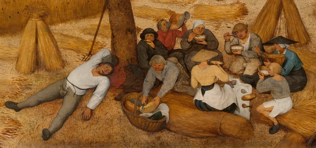
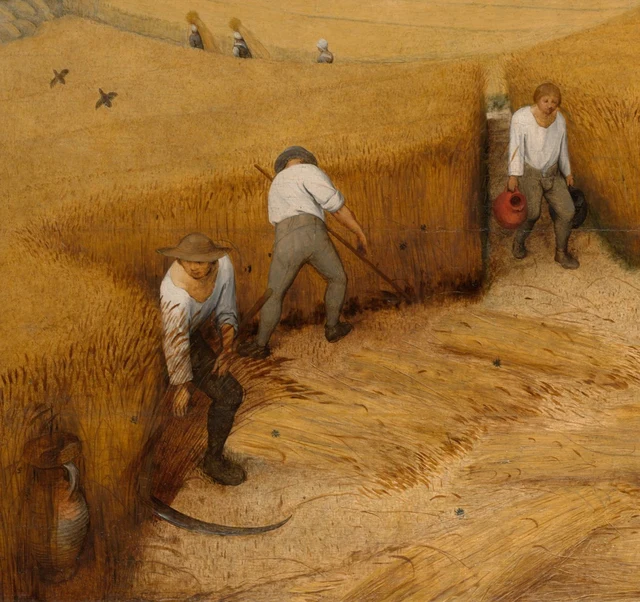
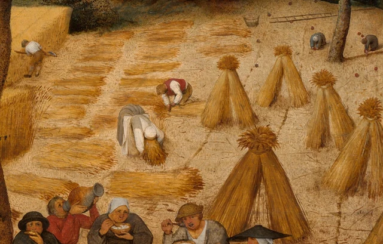
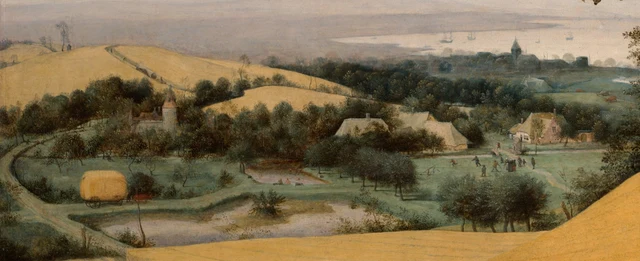

Sous l’arbre, un homme s’est déjà laissé tomber. Ses jambes s’écartent dans deux directions, sa chemise blanche ressort sur le sol doré ; un bras se replie au-dessus de sa tête, l’autre retombe parmi les chaumes. À côté de lui, on mange encore. Un peu plus à gauche, deux faux passent au ras des tiges. Plusieurs vitesses deviennent presque sensibles en même temps : celle de la lame qui tranche, celle de la cuiller portée à la bouche et celle d’un corps qui n’a enfin plus besoin de bouger.
Gardons cet homme allongé en mémoire avant de regarder plus loin.

Cet essai propose de lire le tableau à partir de cette coexistence : Bruegel rend la moisson lisible à l’échelle d’un paysage, tout en laissant aux personnes qui l’habitent des rythmes différents. La saison appelle le travail ; les corps demandent à manger, à boire et à dormir. Leur rencontre fait de la récolte à la fois ce que la terre produit et un temps vécu par des êtres humains.
Peint en 1565, le panneau appartient au cycle des saisons commandé par Nicolaes Jonghelinck, riche marchand anversois. Les Pays-Bas du XVIe siècle se trouvent alors sous la domination des Habsbourg ; commerce urbain, production rurale et vie religieuse y sont étroitement liés. Le paysage nous paraît aujourd’hui un sujet de peinture à part entière. Donner une telle ampleur aux travaux ordinaires des champs constituait pourtant un choix important. Aucun épisode de la vie d’un saint ne fournit ici son centre à tout le territoire. La manière dont les hommes traversent une saison devient elle-même digne d’être représentée. Bruegel et son époque
1 Sous l’arbre les corps arrêtent le regard
L’original mesure environ un mètre soixante de large. Les personnages du premier plan ne sont donc pas les minuscules points que l’on pourrait balayer du doigt sur un écran. Rassemblés en bas à droite autour d’un linge blanc, ils ont chacun leur geste : rapprocher un bol de la bouche, lever une cruche pour boire, se pencher pour couper un aliment dans une corbeille. Un large chapeau abaissé dissimule un visage ; d’autres se montrent sous des angles différents. Aucun mouvement commun ne règle ce repas, et personne n’en occupe le centre en maître de cérémonie.

L’homme allongé a la bouche entrouverte, la chemise desserrée et les jambes largement déployées. Le tableau ne lui ménage pas une pose de sommeil convenable. Ce relâchement compte : le corps qu’il fallait tenir et diriger pour travailler debout abandonne maintenant son poids au sol. Derrière lui, le tronc se dresse ; sur la droite, les gerbes restent debout. Lui seul s’étale. Grâce à cette posture, la chaleur et la somnolence du tableau trouvent un endroit précis où se faire sentir.
Les personnes qui mangent n’ont pas quitté leur lieu de travail. Elles sont assises près du blé coupé, le linge portant les aliments est posé à même le sol et les outils s’appuient contre le tronc. L’arbre soutient la composition tout en offrant, dans la vie représentée, un endroit où reprendre souffle. Son feuillage occupe une grande surface du ciel et forme une masse sombre au-dessus du repas. Quelques pas vers la gauche suffiraient pour retrouver le champ entièrement exposé.
La nourriture claire dans les bols, le pain tenu à la main et la forme ronde que l’on découpe dans la corbeille rapprochent le repas de la moisson. Le commentaire du musée consacré à l’histoire de l’alimentation identifie du pain, du fromage et une bouillie probablement préparée avec du blé. Il convient de distinguer cette interprétation de ce que l’image nous laisse directement examiner : des récipients, des cuillers, un couteau, des morceaux de pain et les gestes de manger ou de boire. La recette précise ne se lit pas dans les touches de peinture. Audioguide du musée et transcription
Il ne s’agit pas de ce même blé qui aurait été coupé puis immédiatement servi. La transformation et la conservation des aliments demandent un temps que le tableau ne représente pas. Mais, au premier plan, les céréales que l’on récolte voisinent avec la nourriture qui entretient la force des travailleurs. L’abondance cesse alors de se réduire à une belle étendue jaune. Elle concerne aussi une bouche, un bol et le moment où un corps doit s’arrêter.
2 La lisière du champ se déplace
Portons le regard vers l’angle inférieur gauche. Les tiges encore sur pied se serrent en un mur élevé. Deux moissonneurs travaillent le long de cette paroi ; leurs bras et les longs manches de leurs faux dessinent des obliques. La lame la plus proche de nous s’étire, basse et courbe, contre le sol clair. L’autre homme nous tourne le dos, les jambes écartées : la position de tout son corps accompagne l’effort transmis à l’outil.

Cette frontière rend immédiatement visible le résultat du travail. D’un côté se pressent des traits verticaux d’un brun doré ; de l’autre s’ouvrent un sol jaune pâle et des rangées de tiges couchées. Les hommes se déplacent sur cette limite et, avec eux, la limite avance dans le champ. Le terrain prend ainsi une forme provisoire : la place dégagée devant nous a déjà été fauchée, tandis que le mur de blé derrière les travailleurs attend encore.
Examinons les tiges au sol. Elles se regroupent en larges bandes suivant la direction dans laquelle elles ont été coupées et déposées. Les courbes se répètent sans devenir tout à fait régulières. Bruegel ne détaille pas chaque brin à travers toute l’étendue. Près de nous, de petites touches suffisent à faire reconnaître les chaumes et les épis ; à mesure que l’on s’éloigne, le blé se rassemble en surfaces colorées plus unies. Les gestes humains se précisent entre ces différentes manières de peindre : ici les tiges se dressent encore, là elles sont couchées, ailleurs elles se réunissent en gerbes.
À droite, des personnages courbés ramassent le blé ; plusieurs gerbes sont déjà dressées. Une figure en blanc se penche si profondément que sa tête et ses mains se perdent presque dans les épis. La pente de son dos rappelle le contour des gerbes voisines. Un instant, le corps et la récolte adoptent des formes proches. La personne appartient à ce paysage sans s’y effacer : le poids du vêtement, la place des genoux et l’allongement des bras continuent de donner à ce geste sa difficulté physique.

Ces gestes peuvent être reliés pour reconstituer un travail agricole, mais le tableau ne les numérote pas comme les étapes d’une démonstration. On fauche à gauche, on rassemble à droite, on se repose sous l’arbre ; plus loin encore, des personnes traversent le champ en portant de gros chargements de céréales. Tout cela a lieu en même temps. Nous pouvons imaginer la journée qui relie ces occupations sans supposer que chaque personnage serait le même travailleur réapparu à une autre heure.
Cette simultanéité rend le sommeil particulièrement sensible. Les autres bougent encore ; l’homme, lui, s’est arrêté. Certains travaux ont également associé le dormeur à la paresse et les travailleurs à la diligence. Catalogue scientifique du musée La lecture proposée ici voit plutôt dans son repos une mesure corporelle de toute la moisson : le regard embrasse d’un coup une terre abondante, tandis qu’un être humain doit manger bouchée après bouchée et travailler par séquences.
3 Le regard s’éloigne mais les corps restent proches
Nous pouvons maintenant passer au-dessus des champs. Derrière les pentes dorées, une zone verte accueille chemins, bosquets, maisons et étangs. À gauche, un chariot chargé de récolte suit une route sinueuse ; un peu à droite du centre, de petites figures se réunissent sur un espace dégagé. Au-delà, tours, voiles et large surface d’eau se fondent dans une brume gris-bleu. L’horizon finit presque par se confondre avec le ciel.

Plusieurs moyens nous entraînent vers la distance. Les personnages diminuent de taille, les éléments se recouvrent de proche en proche ; aux couleurs chaudes et denses du blé succèdent des verts et des bleus plus froids, plus pâles. Les tiges, les plis des vêtements et les feuillages que l’on distinguait près de nous cessent progressivement de se laisser reconnaître un à un. Cette perte de netteté avec la distance porte généralement le nom de perspective atmosphérique. L’œil traverse ainsi une épaisseur d’air, au lieu de simplement compter un premier plan, un plan intermédiaire et un arrière-plan.
L’espace n’en devient pas entièrement ouvert. Le grand tronc, décentré vers la droite, intercepte une partie du lointain ; les branches occupent le haut du tableau. La pente proche cache aussi le raccord avec le terrain situé plus bas. Nous voyons très loin, mais ne pouvons suivre chaque pas qui conduirait de notre position jusqu’à l’eau. Le regard saute aisément vers les voiles. Un corps qui voudrait les rejoindre devrait descendre, contourner les arbres et traverser les terres. À l’ampleur de la vue répondent les obstacles d’un déplacement réel.
Revenons alors à l’homme sous l’arbre. Notre œil a franchi le village et gagné l’étendue d’eau ; son corps demeure tout près. Les silhouettes lointaines peuvent tenir en quelques touches, tandis que ses jambes étendues conservent une longueur impossible à négliger. L’arbre réunit ces deux échelles. Il borde d’un côté la vue panoramique et maintient, à son pied, la vie proche de ceux qui mangent et dorment.
Les occupations du lointain desserrent également le rythme de la scène. De petites figures apparaissent au bord d’un étang, d’autres se rassemblent ou jouent près des maisons, et les chemins servent au transport. Les spécialistes du musée reconnaissent dans ce jeu une pratique consistant à lancer des objets sur un coq. Prêter attention à la cible fait apparaître un aspect plus rude de ces loisirs lointains. Commentaire des spécialistes du musée Toutes ces activités ne suivent pas le mouvement des faux au premier plan. La maturité du blé définit une saison commune sans obliger chacun à accomplir le même geste au même moment. Quand nous revenons à l’ensemble, le titre Les Moissonneurs peut désormais contenir tout un territoire habité.
4 Une saison de l’année chez un marchand
Vu isolément, le panneau pourrait passer pour un paysage d’été conçu comme une œuvre autonome. Il appartenait pourtant à un ensemble de six peintures des saisons, dont cinq subsistent. Les comptes relatifs au don de 1594 et l’inventaire après décès de 1595 mentionnent six tableaux représentant les douze mois de l’année. Documentation historique de la collection Les Chasseurs dans la neige, La Journée sombre, La Fenaison, La Rentrée des troupeaux et Les Moissonneurs montrent différents moments de l’année. Feuillages, neige, ciel et occupations changent ensemble : la saison devient reconnaissable à travers la vie humaine. Présentation du cycle par le Kunsthistorisches Museum de Vienne
La présentation actuelle du Metropolitan Museum situe Les Moissonneurs en juillet ou en août ; celle du Kunsthistorisches Museum, qui répartit l’année en six saisons, associe le panneau à août et septembre. Les deux repères le placent au temps où les céréales mûres sont récoltées. Pour regarder, sa position dans le cycle est plus utile qu’une date imposée : le blé est haut et doré, le travail s’oriente vers la récolte, l’air et les corps font sentir la lourdeur de la fin de l’été. Notice du Met ; Les six saisons selon le KHM
Reconnaître les mois à leurs travaux est une tradition antérieure à Bruegel. Les calendriers du Moyen Âge et de la Renaissance représentent fréquemment les semailles, la moisson ou la vendange pour rendre l’année visible. Bruegel donne à cette manière de penser le temps l’ampleur d’une suite de paysages. Aucun personnage n’a besoin de brandir un attribut pour annoncer l’été. L’avancement de la coupe, les vêtements et les endroits choisis pour se reposer font déjà entrer la saison dans toute la surface peinte. Bruegel et la tradition des calendriers
Jonghelinck était un marchand et collectionneur citadin ; le cycle fut réalisé pour sa demeure de campagne. Les peintures ont peut-être décoré sa salle à manger. Imaginons ce cadre : dans un intérieur prospère, le repas des travailleurs prend une résonance particulière. Le propriétaire peut contempler la production des nourritures de l’année, tandis que les personnages peints mangent entre deux moments de travail. La vue dégagée sur les terres correspond aussi à une position de spectateur disposant de loisir. Le cycle dans la demeure de Jonghelinck
Ce contexte transforme notre perception de l’abondance. Le blé pousse haut, les terres s’étendent, le repas est servi et les corps paraissent robustes. Les intempéries, les mauvaises récoltes, les conditions de location des terres et la répartition des revenus ne sont pas développées ici. Le Met souligne que le tableau regarde les paysans avec sympathie tout en proposant à son riche commanditaire urbain une harmonie naturelle idéalisée. Aussi convaincants soient-ils, les détails appartiennent à une image construite et choisie. Interprétation du musée
Cette sélection reconnue, la peinture ne devient pas pour autant transparente. Elle peut offrir au marchand l’image plaisante d’un domaine fécond. Mais, devant elle, les bouches ouvertes, les jambes pesantes et les dos abaissés jusqu’aux épis nous empêchent de ne considérer que la production. C’est cette tension qui importe à la lecture défendue ici : le champ s’organise en un ensemble satisfaisant à contempler, et les corps proches nous demandent encore de nous arrêter pour reconnaître leur poids et leur rythme.
5 Le jaune de la mi-journée
Une question simple reste à poser : pourquoi ce tableau paraît-il si chaud ?
Le jaune doré en occupe une grande partie sans former une nappe uniforme. Le blé sur pied associe une base brun sombre à des lignes verticales serrées. Le sol fauché est pâle et sec ; les gerbes sont lumineuses sur leurs bords et sombres en leur cœur ; dans l’ombre, les tiges deviennent presque terreuses. Des couleurs voisines passent ainsi d’une texture à une autre. L’œil reste dans un même registre chaud, sans perdre les différences que le travail a introduites dans le terrain.
Le vert profond des feuilles encadre partiellement ce jaune, tandis que le gris-bleu du lointain le fait ressortir d’un autre côté. Le ciel est blanchâtre, grisé, sans la transparence fraîche d’un bleu limpide. L’air semble assouplir les contours éloignés ; près de nous, le champ doré arrive presque jusqu’au bord du cadre. La chaleur se forme à la fois dans les postures, dans la densité des couleurs et dans cette modification de la visibilité.
Les blancs des vêtements jouent un rôle décisif. La chemise du moissonneur à gauche, le dos du personnage penché à droite et le buste déployé du dormeur détachent plusieurs actions des jaunes et des bruns environnants. En suivant ces retours du blanc à travers le champ, on peut relire le vaste paysage, apparemment immobile, comme une série d’efforts et de relâchements locaux. La cruche rouge et le vêtement rouge de la personne qui boit créent des accents chauds plus rares, plus concentrés.
Les gestes sont nombreux, sans que le tableau paraisse agité. Les grandes étendues de blé ménagent des intervalles entre eux ; l’arbre rassemble le groupe de droite ; la distance atténue les petits événements du fond. Nous pouvons examiner chaque action puis reculer un peu pour laisser l’ensemble redevenir un moment d’été, au milieu du jour. Dans ce va-et-vient, l’échelle du paysage et celle des personnes se corrigent mutuellement.
Regardons enfin l’homme rencontré au début. Il ne s’est toujours pas levé ; à gauche, la moisson ne s’achèvera jamais. Pourtant, nous avons vu les tiges couchées, les gerbes réunies, les bols portés à la bouche et le chariot qui emporte la récolte. Nous savons que cet instant immobile contient beaucoup de choses déjà accomplies et d’autres qui vont continuer. C’est là, dans la lecture proposée ici, que réside la force des Moissonneurs : une étape de l’année devient un ensemble visible, au sein duquel chacun conserve le temps de sa propre vie. L’arrêt sous l’arbre donne un corps à l’abondance.
Lecture facultative Revenir au tableau avec SAE
La lecture qui précède se suffit à elle-même. L’esthétique contemporaine SAE, Self-as-an-End, peut maintenant nous aider à préciser une question : sur quoi nous appuyons-nous lorsque nous parlons ici de chaleur, de fatigue ou de rythme ? Cette approche distingue l’émotion personnelle des éléments que plusieurs personnes peuvent examiner ensemble. Ses « rayons » désignent différentes directions d’enquête, sans constituer un classement des œuvres. Ils sont proposés ici comme un outil actuel de lecture, non comme les intentions du peintre. Présentation générale de l’esthétique SAE
Partons de la perception. Dans la figure 2, le dormeur et les personnes qui mangent occupent presque tout le champ visuel ; le poids des corps s’impose. Revenons à la figure 1 : le blé, la couronne de l’arbre et le lointain les enveloppent. Les mêmes postures ne produisent plus tout à fait la même impression dans ces relations différentes. Laissons un instant de côté ce que la couleur du blé indique de sa maturité : regardons son éclat, le vert et le gris-bleu qui l’entourent. Il s’agit d’examiner ensemble l’étendue du jaune, l’entourage vert sombre, la clarté des chemises et les écarts d’échelle. Dire simplement « j’aime la campagne » ne permettrait pas de comprendre ces rapports. Selon le rayon perceptif de SAE, plaisir et beauté ne se déduisent pas automatiquement l’un de l’autre : l’agrément d’une image ne dispense pas d’expliquer comment elle se présente. La beauté de la perception
La direction cognitive nous invite à revenir au tableau avec nos expériences extérieures. Une personne qui connaît la moisson peut anticiper la suite du travail à partir des chaumes, des tiges couchées et des gerbes. Une autre, qui imagine les grands travaux agricoles comme une activité ininterrompue de tous, peut réviser son attente devant le dormeur. Voilà où la mémoire et la prédiction deviennent concrètes : l’expérience antérieure forme une attente que le détail visible peut ensuite modifier. Reconnaître simplement des paysans ne suffit pas à mener cette analyse. La beauté de la cognition
Les chaumes ouvrent une autre question, aux limites précises. Dans un champ réel, les tiges coupées portent la trace de la coupe. Dans le tableau, cette trace est représentée avec de la peinture. Elle permet de réfléchir à la manière dont un événement subsiste dans la forme laissée après lui, à condition de maintenir la différence entre une chose et sa représentation. Distinguer les marques de peinture des traces représentées donne à la question de la causalité un point d’appui concret. La beauté de la causalité
Ces pistes doivent finalement nous ramener à l’ensemble. Une lecture qui ne verrait que l’harmonie aurait encore à expliquer la coexistence de la faux et du sommeil. Une lecture centrée uniquement sur la peine devrait rendre compte des champs si abondants et du panorama si paisible. Les interprétations peuvent se mesurer à ces relations précises. La théorie devient utile lorsqu’elle rend le regard suivant plus attentif que le précédent.
À propos des images et des sources
Les descriptions visuelles reposent sur l’image de 3811 × 2809 pixels fournie par le Metropolitan Museum of Art. La vue complète conserve le fichier téléchargé sans modification ; les figures 2 à 5 sont uniquement des recadrages rectangulaires, sans correction des couleurs, restauration, ajout pictural ni contenu généré. Le JPEG original ne contient pas de profil colorimétrique ICC intégré ; aucun profil n’a été ajouté et aucune conversion colorimétrique n’a été effectuée pour ce dossier. Les recadrages conservent les pixels décodés. Les dimensions de l’affichage, les matières et les conditions d’observation à l’écran restent différentes de celles de l’œuvre originale.
L’œuvre et cette image appartiennent au domaine public ; leur utilisation suit la politique d’accès ouvert du Met. La licence de l’image ne vaut pas autorisation de reproduire les textes de recherche. Cet essai repose avant tout sur une lecture visuelle indépendante ; les données historiques s’appuient sur les sources muséales liées dans le texte. L’interprétation proposée ne prétend restituer ni les intentions du peintre ni une position approuvée par le musée. Voir aussi les références et le registre des images.